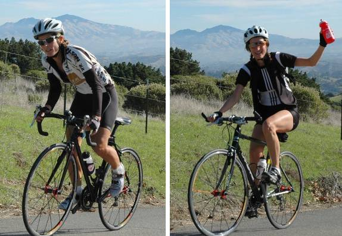

Week 8 Results: Lomas Cantadas
22 Nov 2008
|
2008 Low-Key Hillclimbs Week 8 Results: Lomas Cantadas 22 Nov 2008 |
|  |
| Jennie and Marie-Claire on the final steep grade (Pat Parseghian photo) |
Crystal clear sunshine warmed the chilled morning air just in time for the start today: it was pure Low-Key weather for week 8 of the 2008 series, as we visited Lomas Cantadas and the Berkeley Hills for the first time.
Despite coordinator Patrick Gordis taking us to his northern stomping grounds, it was usual suspects at the head of affairs, as Bill Bushnell blitzed the climb with his famous hybrid-electric recumbent. A few minutes later, Low-Key series leader Tim Clark finished 12 seconds ahead of series men's runner-up Clark Foy to hold onto the lead he reclaimed last week. Carl Nielson was third, finishing just ahead of yours truly.
In the women's standings, Sisters of No Mercy remained to a degree victims of their own overwhelming success, placing 4 of the top 5 on the day. It was Jennie Phillips, Janet Martinez, and Holly Harris with the 1-2-3, followed by Spike's Laura Jump, then Sister Alison Chaiken. Stephanie Jenson (See You Med) and Marie-Claire Vacher (Western Wheelers) rounded out another strong women's turnout. Still, median times in the women have been faster with the Sisters Super-Team, and they've been unable to overtake series leader San Jose Bike Club. The gap is closable, though, with one climb to go.
Special thanks to the fantastic volunteers, led by Coordinator Patrick Gordis, for making this week go super-smoothly.
Thanks to coordinator Patrick Gordis, with help from Michael Barnes, Cara Coburn, Dan Connelly, Ilyse Gordis, Martin Hyland, Howard Kveck, Justin Lucke, Pat Parseghian, and Jonathan Walden for making today's climb possible!median time = 12:13
pl # rider team category time mph fph score 1 244 Bill Bushnell Low-Key Hybrid 12:13 13.21 5815 100.00
median time = 21:12
pl # rider team category time mph fph score 1 210 Tim Clark Red Octane 35+ 15:16 10.57 4653 138.86 2 39 Clark Foy San Jose Bike Club 40+ 15:28 10.44 4593 137.07 3 141 Carl A. Nielson Wells Fargo Racing Team 45+ 16:16 9.92 4367 130.33 4 1 Dan Connelly Low-Key 3 16:20 9.88 4349 129.80 5 622 Floyd Long Oakland Southern Expatriot 17:12 9.38 4130 123.26 6 213 Tom Gardin 35+ 17:35 9.18 4040 120.57 7 555 Roland Freund Davis Bike Club 45+ 17:44 9.10 4006 119.55 8 278 Chris Heisterkamp Google Male 18:23 8.78 3864 115.32 9 536 Andreas Freund Davis Bike Club Junior 18:53 8.55 3762 112.27 10 452 Bruce Gardner Monta Vista Velo 35+ 18:57 8.52 3749 111.87 11 435 Russ McCrary Sisters of No Mercy 45+ 19:05 8.46 3723 111.09 12 600 Tom Brown Google Bad Veggie 19:20 8.35 3674 109.66 13 273 Calvin Do Skinny slow guys 35+ 19:23 8.33 3665 109.37 14 590 Ode Bernstein Term of Enchantment Positive 19:45 8.17 3597 107.34 15 397 Michael Williams Sisters of No Mercy 35+ 19:56 8.10 3564 106.35M 16 457 Robert Palassou Sisters of No Mercy 20:38 7.82 3443 102.75 17 480 Arley Lewis Field of Rabbits 21:11 7.62 3354 100.08 18 631 Frank Vegh Webcor/Alto Velo 2πR 21:12 7.61 3351 100.00 19 280 Patrick Kenny Google 21:19 7.57 3333 99.45 20 509 Alexander Freund Davis Bike Club Junior 21:40 7.45 3279 97.85 21 591 Neal Herman Team Spike 22:05 7.31 3217 96.00 22 473 Steve Youtskey Dolce Vita 45+ 22:34 7.15 3148 93.94 23 372 Ryan P.C. Gibson Google 22:37 7.14 3141 93.74 24 34 Stephen Fong Blubber Busters 5 22:39 7.13 3136 93.60 25 97 Greg McQuaid San Jose Bike Club 35+ 22:54 7.05 3102 92.58 26 649 Jan Novak TJ 4 23:00 7.02 3089 92.17 27 641 James Deitrich TJ Merlot 23:00 7.02 3089 92.17 28 73 Barry Burr One Leg to Stand On 45+ 23:08 6.98 3071 91.64 29 809 Phil Dubach Western Wheelers 35+ 23:32 6.86 3019 90.08 30 351 Jeff Swan Team Spike 23:43 6.81 2995 89.39 31 567 Yuri Zhovnirovsky Field of Rabbits -1 25:21 6.37 2802 83.63 32 478 Patrick Callahan Western Wheelers 35+ 25:32 6.32 2782 83.03 33 615 Bob Corman Team Spike 25:32 6.32 2782 83.03 34 800 Michael Ahern LGBRC 40+ 26:06 6.18 2722 81.23 35 484 Wolfgang Timm Western Wheelers 40+ 28:06 5.74 2528 75.44 M : mishap
median time = 22:57
pl # rider team category time mph fph score 1 449 Jennie Phillips Sisters of No Mercy 45+ 20:01 8.06 3549 114.65 2 240 Janet Martinez Sisters of No Mercy 40+ 21:07 7.64 3364 108.68 3 394 Holly Harris Sisters of No Mercy 45+ 21:31 7.50 3302 106.66 4 356 Laura Jump Team Spike 22:57 7.03 3095 100.00 5 256 Alison Chaiken Sisters of No Mercy 40+ 26:05 6.19 2724 87.99 6 612 Stephanie Jenson You See Med Good Veggie 26:45 6.03 2656 85.79 7 511 Marie-Claire Vacher Western Wheelers 29:04 5.55 2444 78.96
pl team score scoring 1 Sisters of No Mercy 334.43 (Jennie Phillips, Russ McCrary, Janet Martinez) 2 Davis Bike Club 329.66 (Roland Freund, Andreas Freund, Alexander Freund) 3 Google 324.43 (Chris Heisterkamp, Tom Brown, Patrick Kenny) 4 Team Spike 285.39 (Laura Jump, Neal Herman, Jeff Swan) 5 Western Wheelers 252.07 (Phil Dubach, Patrick Callahan, Marie-Claire Vacher) 6 Low-Key 229.80 (Dan Connelly, Bill Bushnell) 7 San Jose Bike Club 229.65 (Clark Foy, Greg McQuaid) 8 TJ 184.35 (Jan Novak, James Deitrich) 9 Field of Rabbits 183.71 (Arley Lewis, Yuri Zhovnirovsky) 10 Red Octane 138.86 (Tim Clark) 11 Wells Fargo Racing Team 130.33 (Carl A. Nielson) 12 Oakland 123.26 (Floyd Long) 13 Monta Vista Velo 111.87 (Bruce Gardner) 14 Skinny slow guys 109.37 (Calvin Do) 15 Term of Enchantment 107.34 (Ode Bernstein) 16 Webcor/Alto Velo 100.00 (Frank Vegh) 17 Dolce Vita 93.94 (Steve Youtskey) 18 Blubber Busters 93.60 (Stephen Fong) 19 One Leg to Stand On 91.64 (Barry Burr) 20 You See Med 85.79 (Stephanie Jenson) 21 LGBRC 81.23 (Michael Ahern)